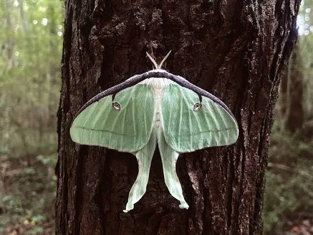

Curiosidades sobre algumas espécies interessantes!

São consideiradas uma das espécies de insetos noturnos mais bonitos da América do Norte. Seu tempo de vida é curto, variando de 7 a 10 dias, elas não possuem boca e nem sistema digestivo, vivendo somente enquanto sua energia de lagarta durar
O nome "Luna" é derivado das grandes marcas em formato de meia-lua presentes em suas asas, também por seu comportamento noturno.
Ao contrario da fase adulta onde não consumen nada, a lagarta das mariposas luna são expremamente ativas e se alimentam continuamente de folhas de árvores.